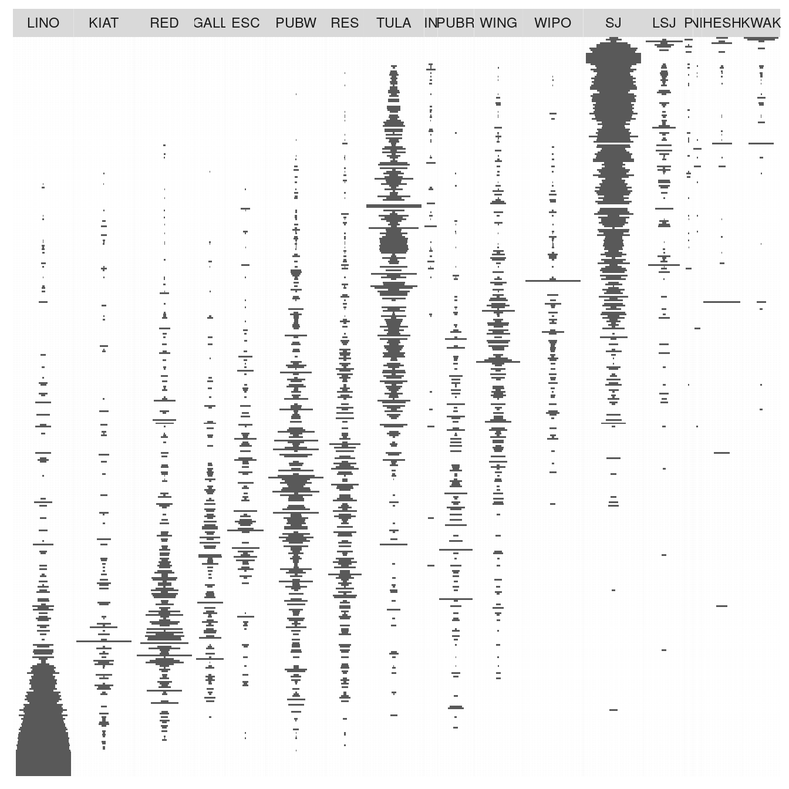

Seriation
The matrix seriation problem in archaeology is based on three conditions and two assumptions, which Dunnell (1970) summarizes as follows.
The homogeneity conditions state that all the groups included in a seriation must:
- Be of comparable duration,
- Belong to the same cultural tradition,
- Come from the same local area.
The mathematical assumptions state that the distribution of any historical or temporal class:
- Is continuous through time,
- Exhibits the form of a unimodal curve.
Theses assumptions create a distributional model and ordering is accomplished by arranging the matrix so that the class distributions approximate the required pattern. The resulting order is infered to be chronological.
Reciprocal ranking
Reciprocal ranking iteratively rearrange rows and/or columns according to their weighted rank in the data matrix until convergence (Ihm 2005).
For a given incidence matrix \(C\):
- The rows of \(C\) are rearranged in increasing order of:
\[ x_{i} = \sum_{j = 1}^{p} j \frac{c_{ij}}{c_{i \cdot}} \]
- The columns of \(C\) are rearranged in a similar way:
\[ y_{j} = \sum_{i = 1}^{m} i \frac{c_{ij}}{c_{\cdot j}} \]
These two steps are repeated until convergence. Note that this procedure could enter into an infinite loop.
# Build an incidence matrix with random data
set.seed(12345)
incidence1 <- IncidenceMatrix(data = sample(0:1, 400, TRUE, c(0.6, 0.4)),
nrow = 20)
# Get seriation order on rows and columns
# If no convergence is reached before the maximum number of iterations (100),
# it stops with a warning.
(indices <- seriate(incidence1, method = "reciprocal", margin = c(1, 2),
stop = 100))
#> Permutation order for matrix seriation:
#> Row order: 1 4 20 3 9 16 19 10 13 2 11 7 17 5 6 18 14 15 8 12
#> Column order: 1 16 9 4 8 14 3 20 13 2 6 18 7 17 5 11 19 12 15 10
#> Method: reciprocal
# Permute matrix rows and columns
incidence2 <- permute(incidence1, indices)
# Plot matrix
plotMatrix(incidence1) +
ggplot2::labs(title = "Original matrix") +
ggplot2::theme(legend.position = "bottom") +
ggplot2::scale_fill_manual(values = c("TRUE" = "black", "FALSE" = "white"))
plotMatrix(incidence2) +
ggplot2::labs(title = "Rearranged matrix") +
ggplot2::theme(legend.position = "bottom") +
ggplot2::scale_fill_manual(values = c("TRUE" = "black", "FALSE" = "white"))

Reciprocal averaging
# Reproduces Desachy 2004 results
## Coerce dataset to an abundance matrix
compiegne_counts <- as(compiegne, "CountMatrix")
## Plot original data matrix
plotBar(compiegne_counts, EPPM = TRUE) +
ggplot2::labs(title = "Original dataset") +
ggplot2::theme_bw() +
ggplot2::theme(panel.spacing = ggplot2::unit(0, "lines"),
panel.border = ggplot2::element_rect(colour = NA),
legend.position = "bottom")
## Get seriation order for columns on EPPM using the reciprocal averaging method
## Expected column order: N, A, C, K, P, L, B, E, I, M, D, G, O, J, F, H
compiegne_indices <- seriate(compiegne_counts, method = "reciprocal",
EPPM = TRUE, margin = 2)
## Permute columns
compiegne_seriation <- permute(compiegne_counts, compiegne_indices)
## Plot new matrix
plotBar(compiegne_seriation, EPPM = TRUE) +
ggplot2::labs(title = "Reordered dataset") +
ggplot2::theme_bw() +
ggplot2::theme(panel.spacing = ggplot2::unit(0, "lines"),
panel.border = ggplot2::element_rect(colour = NA),
legend.position = "bottom")

Correspondance analysis
Correspondance Analysis (CA) is an effective method for the seriation of archaeological assemblages. The order of the rows and columns is given by the coordinates along one dimension of the CA space, assumed to account for temporal variation. The direction of temporal change within the correspondance analysis space is arbitrary: additional information is needed to determine the actual order in time.
## Coerce dataset to an abundance matrix
zuni_counts <- as(zuni, "CountMatrix")
# Correspondance analysis of the whole dataset
ca <- FactoMineR::CA(zuni_counts, graph = FALSE)
# Plot CA results
ggplot2::ggplot(mapping = ggplot2::aes(x = `Dim 1`, y = `Dim 2`)) +
ggplot2::geom_vline(xintercept = 0, linetype = 2) +
ggplot2::geom_hline(yintercept = 0, linetype = 2) +
ggplot2::geom_point(data = as.data.frame(ca$row$coord), color = "black") +
ggplot2::geom_point(data = as.data.frame(ca$col$coord), color = "red") +
ggplot2::coord_fixed() +
ggplot2::theme_bw()
# Get row permutations from CA coordinates
zuni_indices <- seriate(zuni_counts, method = "correspondance", margin = 1)
# Permute data matrix
zuni_seriation <- permute(zuni_counts, zuni_indices)
# Plot Ford diagram
# Warning: this may take a few seconds!
plotBar(zuni_seriation, level = FALSE) +
ggplot2:: theme(axis.text = ggplot2::element_blank(),
axis.ticks = ggplot2::element_blank(),
axis.title = ggplot2::element_blank())
Refine CA-based seriation
Peeples and Schachner (2012) propose a procedure to identify samples that are subject to sampling error or samples that have underlying structural relationships and might be influencing the ordering along the CA space. This relies on a partial bootstrap approach to CA-based seriation where each sample is replicated n times. The maximum dimension length of the convex hull around the sample point cloud allows to remove samples for a given cutoff value.
According to Peeples and Schachner (2012), “[this] point removal procedure [results in] a reduced dataset where the position of individuals within the CA are highly stable and which produces an ordering consistend with the assumptions of frequency seriation.”
# Reproduces Peeples and Schachner 2012 results
## Samples with convex hull maximum dimension length greater than the cutoff
## value will be marked for removal.
## Define cutoff as one standard deviation above the mean
fun <- function(x) { mean(x) + sd(x) }
## Get indices of samples to be kept
## Warning: this may take a few seconds!
set.seed(123)
zuni_keep <- refine(zuni_counts, cutoff = fun, n = 1000)
## Plot convex hull
## blue: convex hull for samples; red: convex hull for types
### All bootstrap samples
ggplot2::ggplot(mapping = ggplot2::aes(x = x, y = y, group = id)) +
ggplot2::geom_vline(xintercept = 0, linetype = 2) +
ggplot2::geom_hline(yintercept = 0, linetype = 2) +
ggplot2::geom_polygon(data = zuni_keep[["rows"]],
fill = "blue", alpha = 0.05) +
ggplot2::geom_polygon(data = zuni_keep[["columns"]],
fill = "red", alpha = 0.5) +
ggplot2::coord_fixed() +
ggplot2::theme_bw() +
ggplot2::labs(title = "Whole dataset", x = "Dim. 1", y = "Dim. 2")
### Only retained samples
ggplot2::ggplot(mapping = ggplot2::aes(x = x, y = y, group = id)) +
ggplot2::geom_vline(xintercept = 0, linetype = 2) +
ggplot2::geom_hline(yintercept = 0, linetype = 2) +
ggplot2::geom_polygon(data = subset(zuni_keep[["rows"]],
id %in% names(zuni_keep[["keep"]])),
fill = "blue", alpha = 0.05) +
ggplot2::geom_polygon(data = zuni_keep[["columns"]],
fill = "red", alpha = 0.5) +
ggplot2::coord_fixed() +
ggplot2::theme_bw() +
ggplot2::labs(title = "Selected samples", x = "Dim. 1", y = "Dim. 2")

If the results of refine is used as an input argument in seriate, a correspondance analysis is performed on the subset of object which matches the samples to be kept. Then excluded samples are projected onto the dimensions of the CA coordinate space using the row transition formulae. Finally, row coordinates onto the first dimension give the seriation order.
## Get CA-based seriation order
(zuni_refined <- seriate(zuni_counts, zuni_keep, margin = 1))
#> Permutation order for matrix seriation:
#> Row order: 372 350 387 367 110 417 364 357 407 406 160 344 348 356 373 384 378 362 339 383... (400 more)
#> Column order: 1 2 3 4 5 6 7 8 9 10 11 12 13 14 15 16 17 18
#> Method: refined correspondanceDating
This package provides an implementation of the chronological modeling method developed by Bellanger and Husi (2012). This allows the construction of two different probability estimate density curves of archaeological assembalge dates. The first one (event date) represents the terminus post-quem of an archaeological assemblage: an event dated in calendar time. The second represents the “chronological profile” of the assemblage: the accumulation rate (Bellanger and Husi 2012).
This method - somewhat similar to that described by Poblome and Groenen (2003) - is based on the adjustment of a Gaussian multiple linear regression model on the factors resulting from a correspondence analysis. This model results from the known dates of a selection of reliable contexts and allows to predict the event dates of the remaining assemblage with a 95% confidence interval.
Since correspondence analysis allows the rows and columns of a contingency table to be projected in the same space (through the transition formula), it is possible to estimate the date of each fabric using the previous model. Finally, the accumulation date of each context is defined as the mean of the fabric dates, weighted by their relative proportions in that context (akin to the Mean Ceramic Date proposed by South 1977).
This method relies on strong archaeological and statistical assumptions. Use it only if you know what you are doing. Note that this implementation is experimental (see help(dateEvent)).
# Coerce dataset to abundance (count) matrix
zuni <- as(zuni, "CountMatrix")
# Assume that some assemblages are reliably dated (this is NOT a real example).
# The names of the vector entries must match the names of the assemblages.
dates <- list(
LZ0569 = 1097, LZ0279 = 1119, CS16 = 1328, LZ0066 = 1111,
LZ0852 = 1216, LZ1209 = 1251, CS144 = 1262, LZ0563 = 1206,
LZ0329 = 1076, LZ0005Q = 859, LZ0322 = 1109, LZ0067 = 863,
LZ0578 = 1180, LZ0227 = 1104, LZ0610 = 1074
)
# Model the event and accumulation date for each assemblage.
(model <- dateEvent(zuni, dates, cutoff = 90))
#> Modelled event date:
#> R2: 0.9997194
#> Residual standard deviation: 4 years
#> CI: 95 %The estimated probability density of an event date is approached by a normal distribution. The distribution of the accumulation time of each context is approached by a Gaussian mixture.
# Plot event (line) and accumulation (grey area) date distributions
plotDate(model, select = "LZ1105") +
ggplot2::theme_bw()
Resampling methods can be used to check the stability of the resulting model. If jackknife is TRUE, one type/fabric is removed at a time and all statistics are recalculated. In this way, one can assess whether certain type/fabric has a substantial influence on the date estimate. If bootstrap is TRUE, a large number of new bootstrap assemblages is created, with the same sample size, by resampling the original assemblage with replacement. Then, examination of the bootstrap statistics makes it possible to pinpoint assemblages that require further investigation.
# Check model variability
checked <- dateEvent(zuni, dates, cutoff = 90,
jackknife = TRUE, bootstrap = TRUE, n = 1000)
# Extract results for the first 5 assemblages
## Modeled event dates
checked["rows", 1:5]
#> id estimation earliest latest error
#> 1 LZ1105 1167.968 1158.235 1177.701 3.786202
#> 2 LZ1103 1142.834 1139.133 1146.534 1.439488
#> 3 LZ1100 1155.673 1147.630 1163.717 3.129114
#> 4 LZ1099 1099.272 1092.153 1106.392 2.769655
#> 5 LZ1097 1088.356 1079.856 1096.856 3.306570
## Jackknife fabrics
checked["jackknife", 1:5]
#> id estimation earliest latest error bias
#> 1 LZ1105 1174.900 1165.167 1184.632 3.786202 117.83615
#> 2 LZ1103 1145.111 1141.411 1148.812 1.439488 38.71922
#> 3 LZ1100 1159.065 1151.022 1167.109 3.129114 57.66493
#> 4 LZ1099 1089.060 1081.940 1096.180 2.769655 -173.61223
#> 5 LZ1097 1081.514 1073.014 1090.014 3.306570 -116.31049
## Bootstrap of assemblages
checked["bootstrap", 1:5]
#> id min Q05 mean Q95 max
#> 1 LZ1105 1110.5901 1140.3476 1168.583 1195.696 1221.696
#> 2 LZ1103 1046.5106 1094.2006 1141.181 1180.590 1218.170
#> 3 LZ1100 1061.6247 1102.9261 1155.101 1200.989 1234.376
#> 4 LZ1099 1088.9400 1090.8833 1099.435 1107.796 1118.772
#> 5 LZ1097 884.4105 997.5937 1087.453 1171.700 1214.822References
Bellanger, Lise, and Philippe Husi. 2012. “Statistical Tool for Dating and Interpreting Archaeological Contexts Using Pottery.” Journal of Archaeological Science 39 (4): 777–90. https://doi.org/10.1016/j.jas.2011.06.031.
Dunnell, Robert C. 1970. “Seriation Method and Its Evaluation.” American Antiquity 35 (03): 305–19. https://doi.org/10.2307/278341.
Ihm, Peter. 2005. “A Contribution to the History of Seriation in Archaeology.” In Classification the Ubiquitous Challenge, edited by Claus Weihs and Wolfgang Gaul, 307–16. Berlin Heidelberg: Springer. https://doi.org/10.1007/3-540-28084-7_34.
Peeples, Matthew A., and Gregson Schachner. 2012. “Refining Correspondence Analysis-Based Ceramic Seriation of Regional Data Sets.” Journal of Archaeological Science 39 (8): 2818–27. https://doi.org/10.1016/j.jas.2012.04.040.
Poblome, J., and P. J. F. Groenen. 2003. “Constrained Correspondence Analysis for Seriation of Sagalassos Tablewares.” In The Digital Heritage of Archaeology, edited by M. Doerr and A. Sarris. Athens: Hellenic Ministry of Culture.
South, S. A. 1977. Method and Theory in Historical Archaeology. Studies in Archeology. New York: Academic Press.